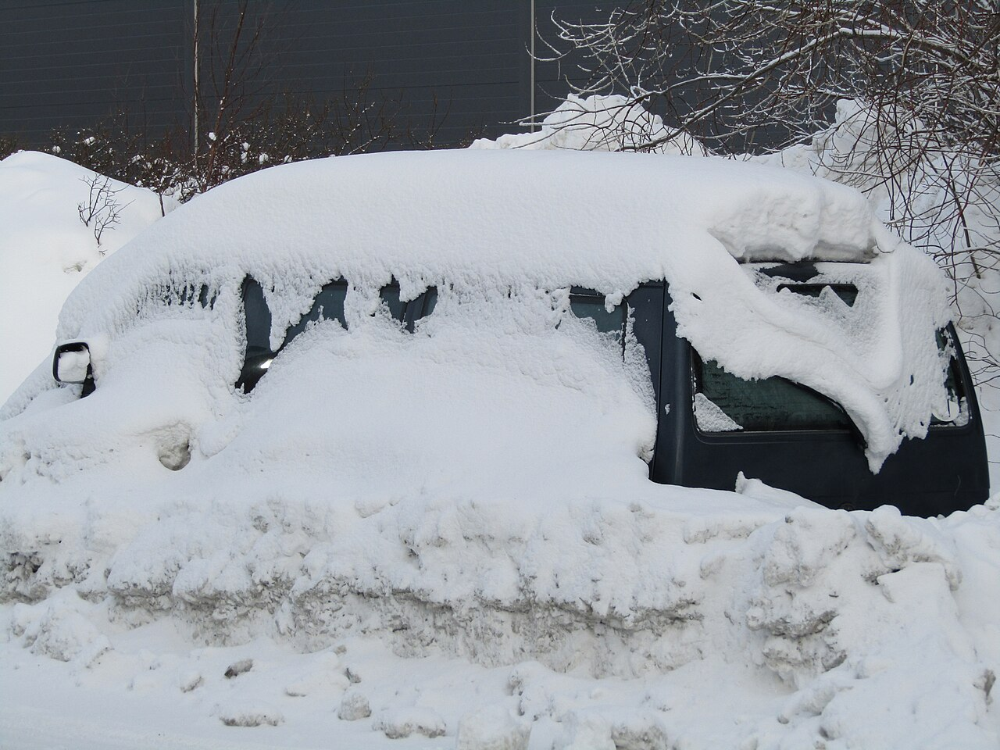

What to Do If Your Car Won't Start in the Cold
Diagnose it by sound, jump it right, and know when to call for help.

Photo: Leonora (Ellie) Enking from East Preston, United Kingdom, CC BY-SA 2.0, via Wikimedia Commons

It's -20°C, you're already late, and the car does nothing — or worse, it makes a noise you've never heard before. Cold no-starts are almost always one of a few things, and you can narrow it down in seconds by listening.
Diagnose it by sound
- Rapid clicking, no crank: the battery is too weak to turn the starter. This is the most common cold-morning failure. The fix is a jump start or a new battery.
- Slow, dragging crank: the battery is weak but not dead. It might start on the second or third try — but each try drains it further, so don't keep grinding.
- Normal crank, won't catch: the battery is fine; the problem is fuel or spark. Could be a frozen fuel line, a failed fuel pump, or bad spark plugs. This one usually needs a mechanic.
- Nothing at all — no lights, no click: check the battery connections. A loose or corroded terminal can cut all power. Wiggle the cables (engine off) and look for white or blue crust on the terminals.
How to jump it right
If it's the battery, a jump start will get you going. The order matters: red clamp to the dead battery's positive (+) terminal, red clamp to the good battery's positive terminal, black clamp to the good battery's negative (−) terminal, and the last black clamp to a bare metal bolt on the dead car's engine — not the dead battery's negative terminal. Start the good car, wait a minute, then try the dead one. Once it starts, leave the cables on for another minute, then remove them in reverse order. Drive for at least 20 to 30 minutes afterward so the alternator can recharge the battery — a five-minute trip to the store won't do it.
The portable jump starter advantage
A portable jump starter ($60–$100) starts your car with no second vehicle needed. Keep it charged and in the car — but not in a freezing trunk all winter, since lithium packs hate extreme cold too. Bring it inside on the coldest nights, or at least check its charge monthly.
When to stop trying
If the car cranks normally but won't start after a few tries, stop. Continued cranking floods the engine and drains the battery, turning one problem into two. If you smell fuel strongly, stop immediately — that's a flooding or leak situation. Call for a tow or roadside assistance. The same goes for any grinding or screeching noise, which can mean a failing starter.
Prevention beats rescue
Get the battery tested in October — most auto parts stores do it free. If your car has a block heater, plug it in when the temperature drops below -15°C; it keeps the oil warm and the engine turns over far more easily. Keep the fuel tank above half a tank all winter — less air in the tank means less condensation, and condensation is what freezes fuel lines. And park in a garage when you can: even an unheated garage is several degrees warmer than outside, and that can be the difference between starting and not.
🌡️ Check tomorrow before it checks you
Wondering about tomorrow morning? The cold-start predictor checks tomorrow's overnight low for your town and tells you your start risk — before you're standing in the driveway at 7 AM.
← Back to the battery care guide